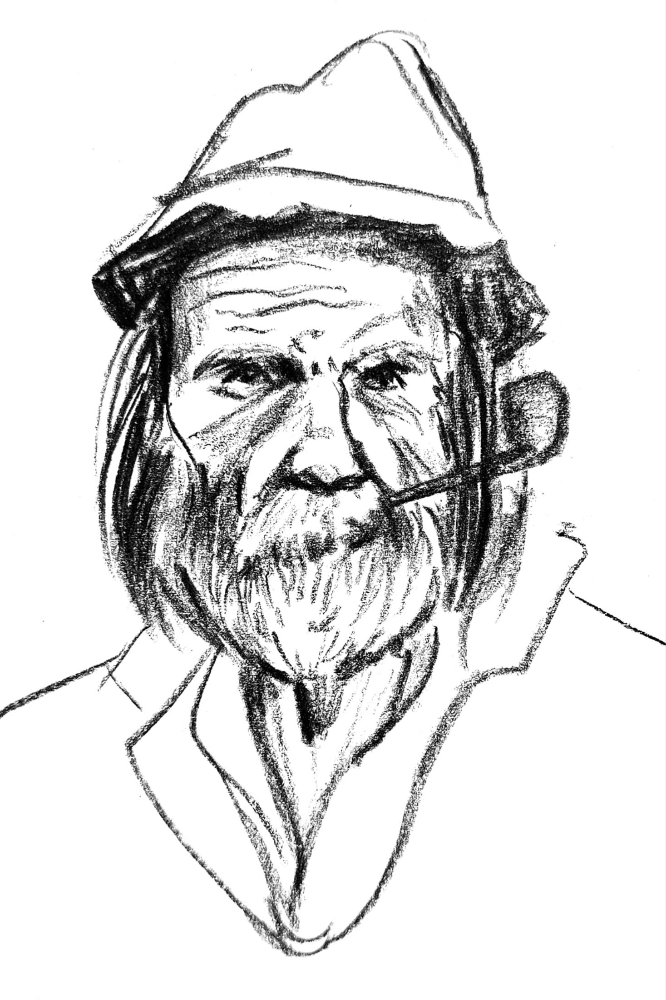
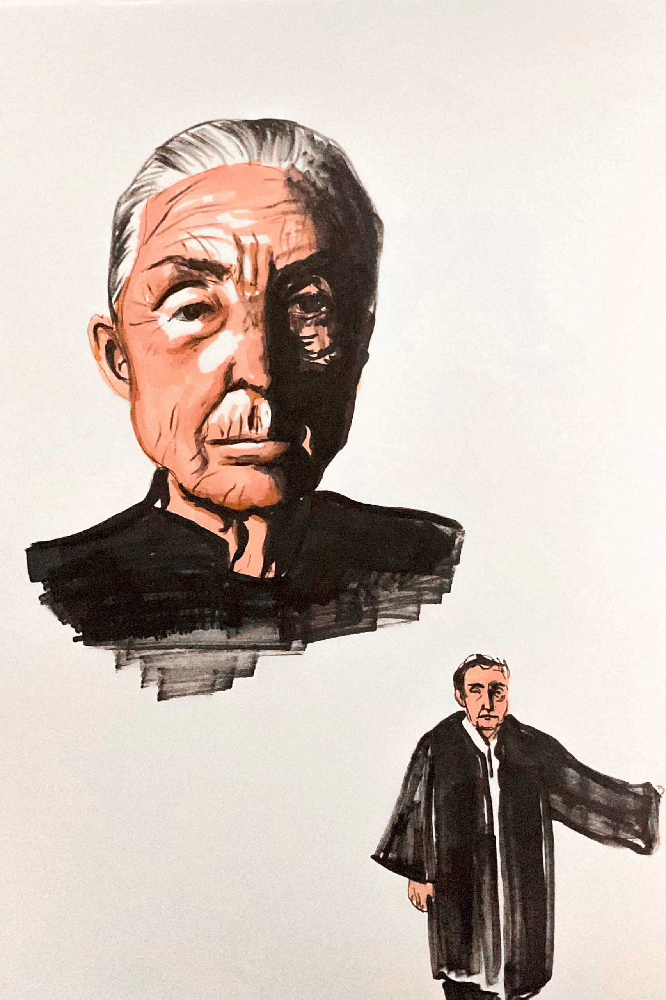
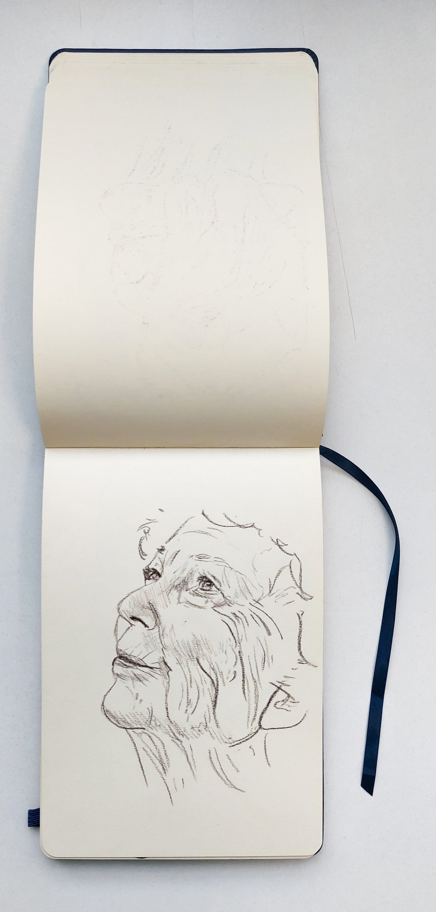
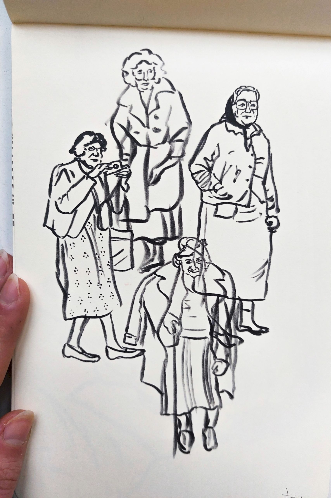

Réalisation d'un carnet de croquis avec un thème récurrent, obsédant, de notre choix, ici les personnes âgées. Il s'agissait de multiplier les croquis et les techniques pour aborder son sujet de la manière la plus complète et exhaustive possible. Techniques utilisées : craie comtée, marqueur, encre de chine, fusain
   